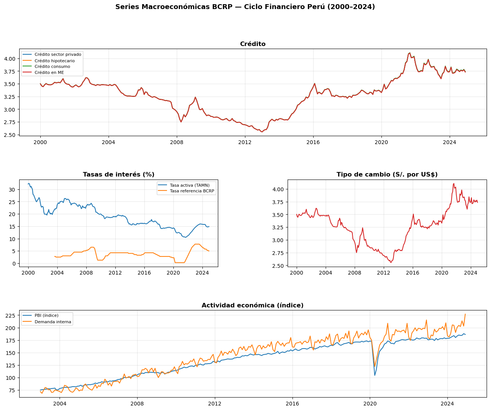
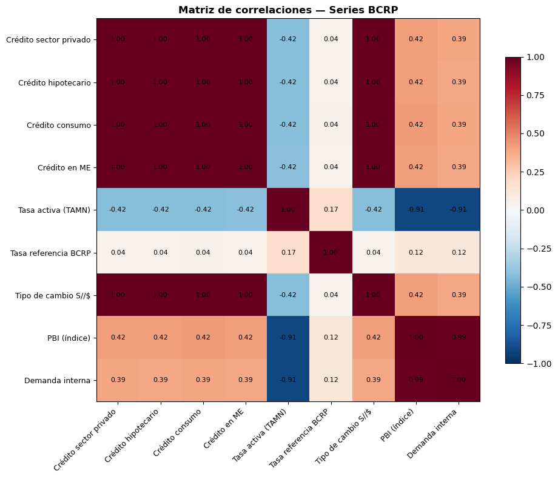

import os
os.chdir('..') # sube un nivel desde notebooks/ a la raíz del repo
print(f"✅ Directorio: {os.getcwd()}")✅ Directorio: /Users/robert/Documents/tesis-ciclo-financiero-peruTesis: Medición del ciclo financiero en Perú mediante técnicas de reducción dimensional y machine learning
Autor: Roberto Samaniego
Asesor: Dr. Sergio Camiz
Fecha: 2024
Este notebook realiza la exploración inicial de las series macroeconómicas disponibles en el BCRP: descarga, limpieza, visualización y análisis de correlaciones.
✅ Directorio: /Users/robert/Documents/tesis-ciclo-financiero-peru# Códigos de series del BCRP
SERIES = {
# CRÉDITO
'Crédito sector privado': 'PN01207PM',
'Crédito hipotecario': 'PN01210PM',
'Crédito consumo': 'PN01209PM',
'Crédito en ME': 'PN01208PM',
# TASAS
'Tasa activa (TAMN)': 'PN07807NM',
'Tasa referencia BCRP': 'PD04722MM',
# TIPO DE CAMBIO
'Tipo de cambio S//$': 'PN01246PM',
# ACTIVIDAD
'PBI (índice)': 'PN01773AM',
'Demanda interna': 'PN01774AM',
}
BLOQUES = {
'Crédito': ['Crédito sector privado', 'Crédito hipotecario', 'Crédito consumo', 'Crédito en ME'],
'Tasas': ['Tasa activa (TAMN)', 'Tasa referencia BCRP'],
'TC': ['Tipo de cambio S//$'],
'Actividad': ['PBI (índice)', 'Demanda interna'],
}
BASE_URL = 'https://estadisticas.bcrp.gob.pe/estadisticas/series/api'
def descargar_serie(codigo, inicio='2000-1', fin='2024-12'):
"""Descarga una serie del BCRP por código."""
url = f'{BASE_URL}/{codigo}/json/{inicio}/{fin}/ing'
try:
r = requests.get(url, timeout=15)
data = r.json()
periodos = data.get('periods', [])
registros = []
for p in periodos:
valor = p['values'][0]
try:
valor = float(str(valor).replace(',', '.'))
except:
valor = None
registros.append({'fecha': p['name'], 'valor': valor})
df = pd.DataFrame(registros)
df['fecha'] = pd.to_datetime(df['fecha'], format='%b.%Y', errors='coerce')
return df.dropna(subset=['fecha']).set_index('fecha').sort_index()
except Exception as e:
print(f'Error en {codigo}: {e}')
return pd.DataFrame()
# Descargar todas las series
print('Descargando series del BCRP...')
data = {}
for nombre, codigo in SERIES.items():
df = descargar_serie(codigo)
if not df.empty:
data[nombre] = df['valor']
print(f' ✅ {nombre} — {len(df)} obs. ({df.index[0].strftime("%Y-%m")} a {df.index[-1].strftime("%Y-%m")})')
print(f'\nTotal: {len(data)} series descargadas')Descargando series del BCRP...
✅ Crédito sector privado — 300 obs. (2000-01 a 2024-12)
✅ Crédito hipotecario — 300 obs. (2000-01 a 2024-12)
✅ Crédito consumo — 300 obs. (2000-01 a 2024-12)
✅ Crédito en ME — 300 obs. (2000-01 a 2024-12)
✅ Tasa activa (TAMN) — 300 obs. (2000-01 a 2024-12)
✅ Tasa referencia BCRP — 256 obs. (2003-09 a 2024-12)
✅ Tipo de cambio S//$ — 300 obs. (2000-01 a 2024-12)
✅ PBI (índice) — 264 obs. (2003-01 a 2024-12)
✅ Demanda interna — 264 obs. (2003-01 a 2024-12)
Total: 9 series descargadas# Construir DataFrame consolidado
df_all = pd.DataFrame(data)
# Resumen
resumen = pd.DataFrame({
'Inicio': df_all.apply(lambda x: x.dropna().index.min().strftime('%Y-%m')),
'Fin': df_all.apply(lambda x: x.dropna().index.max().strftime('%Y-%m')),
'Obs': df_all.count(),
'Nulos%': round(df_all.isna().sum() / len(df_all) * 100, 1),
'Media': round(df_all.mean(), 2),
'Mín': round(df_all.min(), 2),
'Máx': round(df_all.max(), 2),
'Último': round(df_all.iloc[-1], 2),
})
print('RESUMEN ESTADÍSTICO DE SERIES BCRP')
print('=' * 70)
resumenRESUMEN ESTADÍSTICO DE SERIES BCRP
======================================================================| Inicio | Fin | Obs | Nulos% | Media | Mín | Máx | Último | |
|---|---|---|---|---|---|---|---|---|
| Crédito sector privado | 2000-01 | 2024-12 | 300 | 0.0 | 3.28 | 2.55 | 4.11 | 3.74 |
| Crédito hipotecario | 2000-01 | 2024-12 | 300 | 0.0 | 3.28 | 2.55 | 4.11 | 3.73 |
| Crédito consumo | 2000-01 | 2024-12 | 300 | 0.0 | 3.28 | 2.55 | 4.11 | 3.74 |
| Crédito en ME | 2000-01 | 2024-12 | 300 | 0.0 | 3.28 | 2.55 | 4.10 | 3.73 |
| Tasa activa (TAMN) | 2000-01 | 2024-12 | 300 | 0.0 | 18.99 | 10.49 | 32.37 | 14.88 |
| Tasa referencia BCRP | 2003-09 | 2024-12 | 256 | 14.7 | 3.75 | 0.25 | 7.75 | 5.00 |
| Tipo de cambio S//$ | 2000-01 | 2024-12 | 300 | 0.0 | 3.28 | 2.55 | 4.11 | 3.73 |
| PBI (índice) | 2003-01 | 2024-12 | 264 | 12.0 | 136.10 | 75.00 | 187.90 | 186.37 |
| Demanda interna | 2003-01 | 2024-12 | 264 | 12.0 | 144.62 | 68.48 | 227.03 | 227.03 |
colores = ['#1f77b4', '#ff7f0e', '#2ca02c', '#d62728']
fig = plt.figure(figsize=(16, 12))
fig.suptitle('Series Macroeconómicas BCRP — Ciclo Financiero Perú (2000–2024)',
fontsize=13, fontweight='bold', y=0.98)
gs = gridspec.GridSpec(3, 2, figure=fig, hspace=0.5, wspace=0.35)
# Crédito (fila completa)
ax1 = fig.add_subplot(gs[0, :])
for i, nombre in enumerate(BLOQUES['Crédito']):
if nombre in data:
ax1.plot(data[nombre].index, data[nombre].values,
label=nombre, color=colores[i], linewidth=1.5)
ax1.set_title('Crédito', fontweight='bold')
ax1.legend(fontsize=8)
ax1.grid(True, alpha=0.3)
# Tasas
ax2 = fig.add_subplot(gs[1, 0])
for i, nombre in enumerate(BLOQUES['Tasas']):
if nombre in data:
ax2.plot(data[nombre].index, data[nombre].values,
label=nombre, color=colores[i], linewidth=1.5)
ax2.set_title('Tasas de interés (%)', fontweight='bold')
ax2.legend(fontsize=8)
ax2.grid(True, alpha=0.3)
# Tipo de cambio
ax3 = fig.add_subplot(gs[1, 1])
if 'Tipo de cambio S//$' in data:
ax3.plot(data['Tipo de cambio S//$'].index, data['Tipo de cambio S//$'].values,
color='#d62728', linewidth=1.5)
ax3.set_title('Tipo de cambio (S/. por US$)', fontweight='bold')
ax3.grid(True, alpha=0.3)
# Actividad económica (fila completa)
ax4 = fig.add_subplot(gs[2, :])
for i, nombre in enumerate(BLOQUES['Actividad']):
if nombre in data:
ax4.plot(data[nombre].index, data[nombre].values,
label=nombre, color=colores[i], linewidth=1.5)
ax4.set_title('Actividad económica (índice)', fontweight='bold')
ax4.legend(fontsize=8)
ax4.grid(True, alpha=0.3)
plt.savefig('reports/figures/01_series_bcrp.png', dpi=150, bbox_inches='tight')
print('✅ Gráfico guardado en reports/figures/01_series_bcrp.png')
plt.show()✅ Gráfico guardado en reports/figures/01_series_bcrp.png
df_corr = df_all.dropna()
corr = df_corr.corr()
fig, ax = plt.subplots(figsize=(10, 8))
im = ax.imshow(corr.values, cmap='RdBu_r', vmin=-1, vmax=1)
ax.set_xticks(range(len(corr.columns)))
ax.set_yticks(range(len(corr.columns)))
ax.set_xticklabels(corr.columns, rotation=45, ha='right', fontsize=9)
ax.set_yticklabels(corr.columns, fontsize=9)
for i in range(len(corr)):
for j in range(len(corr)):
ax.text(j, i, f'{corr.values[i,j]:.2f}',
ha='center', va='center', fontsize=8)
plt.colorbar(im, ax=ax, shrink=0.8)
ax.set_title('Matriz de correlaciones — Series BCRP', fontsize=12, fontweight='bold')
plt.tight_layout()
plt.savefig('reports/figures/01_correlaciones_bcrp.png', dpi=150, bbox_inches='tight')
print('✅ Guardado en reports/figures/01_correlaciones_bcrp.png')
plt.show()✅ Guardado en reports/figures/01_correlaciones_bcrp.png
✅ Dataset guardado en data/processed/series_bcrp_consolidado.csv
Dimensiones: 300 filas x 9 columnas| Crédito sector privado | Crédito hipotecario | Crédito consumo | Crédito en ME | Tasa activa (TAMN) | Tasa referencia BCRP | Tipo de cambio S//$ | PBI (índice) | Demanda interna | |
|---|---|---|---|---|---|---|---|---|---|
| fecha | |||||||||
| 2024-08-01 | 3.741850 | 3.741325 | 3.745550 | 3.737100 | 14.9261 | 5.50 | 3.741325 | 185.173622 | 204.442675 |
| 2024-09-01 | 3.768962 | 3.768214 | 3.772143 | 3.764286 | 14.7177 | 5.25 | 3.768214 | 184.332773 | 202.193806 |
| 2024-10-01 | 3.754364 | 3.753591 | 3.757500 | 3.749682 | 14.7445 | 5.25 | 3.753591 | 184.553940 | 213.531675 |
| 2024-11-01 | 3.779135 | 3.778850 | 3.783050 | 3.774650 | 14.7810 | 5.00 | 3.778850 | 187.895068 | 203.029432 |
| 2024-12-01 | 3.735537 | 3.734895 | 3.740158 | 3.729632 | 14.8781 | 5.00 | 3.734895 | 186.365603 | 227.031995 |